A complete HRIS for multi-branch organizations — employee records, schedules, pay and position history, attendance, and system-wide access control, all in one auditable place.
hr.savest.cloud
Product Walkthrough · 2026
Agenda
What we'll walk through
Seven core modules — each scoped to the branches and privileges of the account using them.
DashboardLive headcount, birthdays, and the audit feed.
EmployeesRecords, schedules, and movement history.
Employee MemosIssued memos, linked to Drive files.
Performance EvaluationScores and ratings per employee.
Company SetupBranches, positions, grades, statuses.
System SettingsAccounts, roles, privileges, logs.
Plus: Google sign-in, Drive-linked files, and branch‑level data replication — covered at the end.
Introducing
One system, every HR record, fully auditable
SAVEST-HRIS centralizes the entire employee lifecycle — onboarding, scheduling, position, salary, and status changes — behind role- and branch-based access control, with every action logged.
7
Core modules
53
Granular privileges
100%
Actions logged & traceable
Getting Started
One login, scoped to your role
Username & password, or GoogleA standard sign-in form plus one-click "Login using Google" for linked accounts.
Every account has a User TypeThat role defines exactly which modules, branches, and actions the account can reach.
No privileges, no accessAn account with nothing assigned is signed out immediately as "Unauthorized Account."
hr.savest.cloud/login
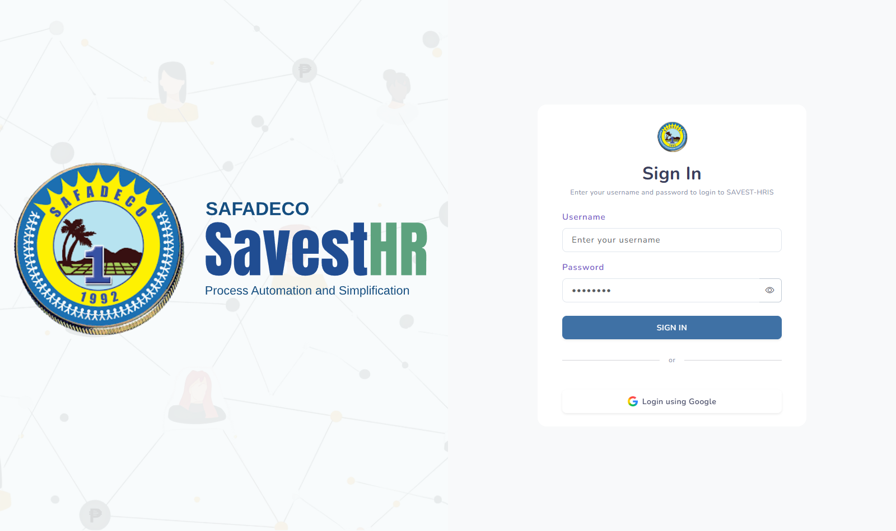
Module 01 · Dashboard
Everything that matters, the moment you sign in
hr.savest.cloud/system/dashboard
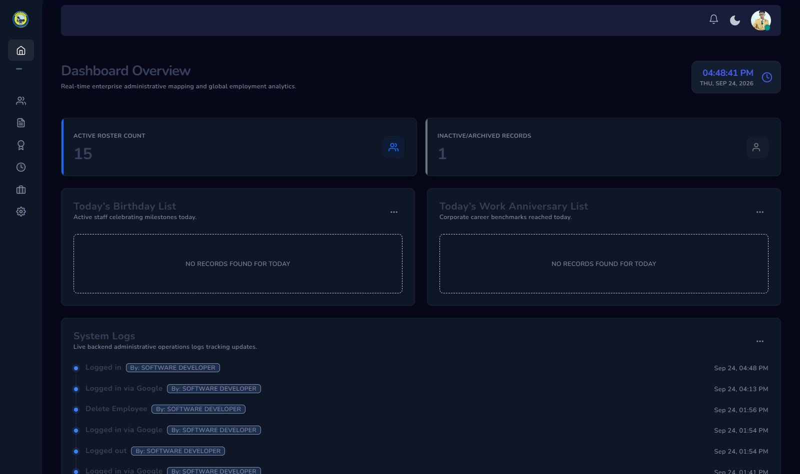
Live headcountActive vs. inactive/archived counts, driven by each employee's current status.
Today's people-momentsBirthdays and work anniversaries, surfaced automatically — no manual tracking.
A live activity feedThe most recent system-wide actions, right on the landing page.
Module 02 · Employees
The full 201-file, digitized
One form, the full recordPersonal data, government IDs, address, family, education, work history, and references.
A directory scoped to youFilter by branch, position, employment status, or date employed — limited to your assigned branches.
One menu, every actionProfile, edit, photo, weekly schedule, and every movement — from a single row action menu.
employee/employee_profile
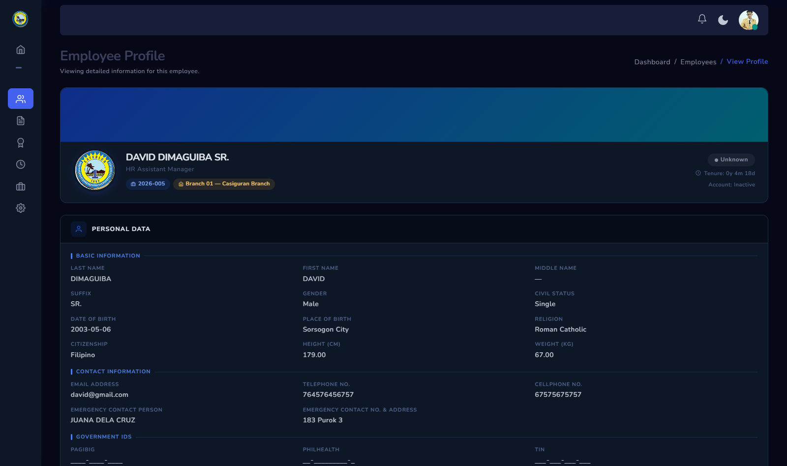
employee/employee_list
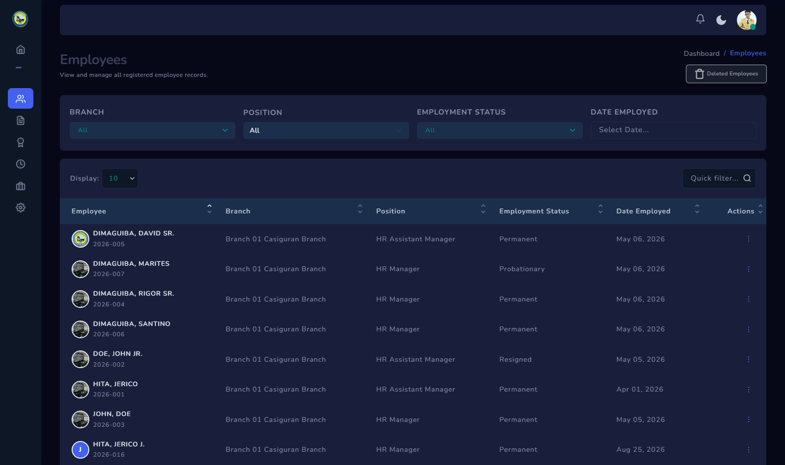
Module 02 · Weekly Schedules
Every shift, every break, always current
ews/load_bulk_update
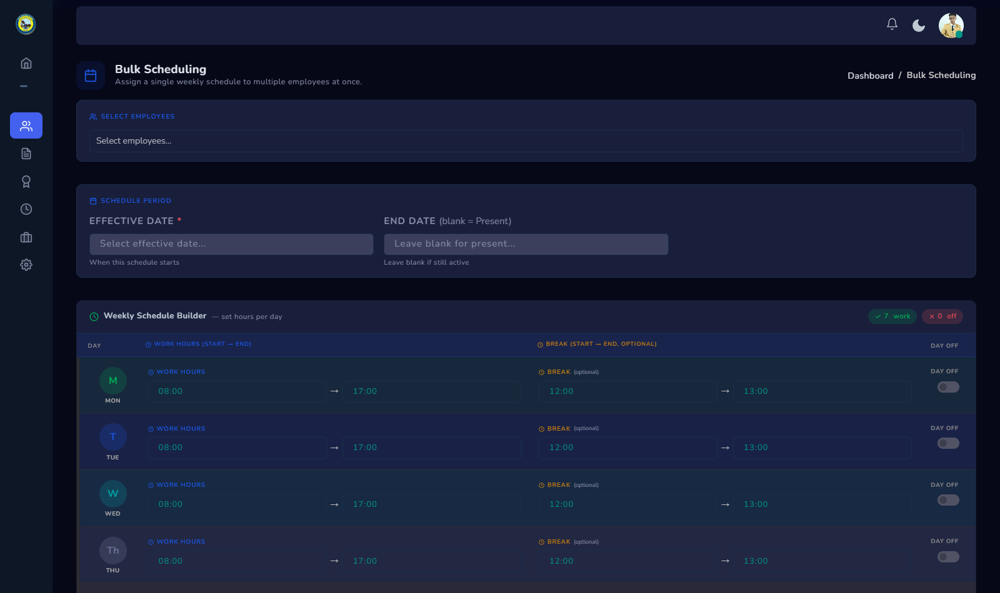
ews/load_wsl
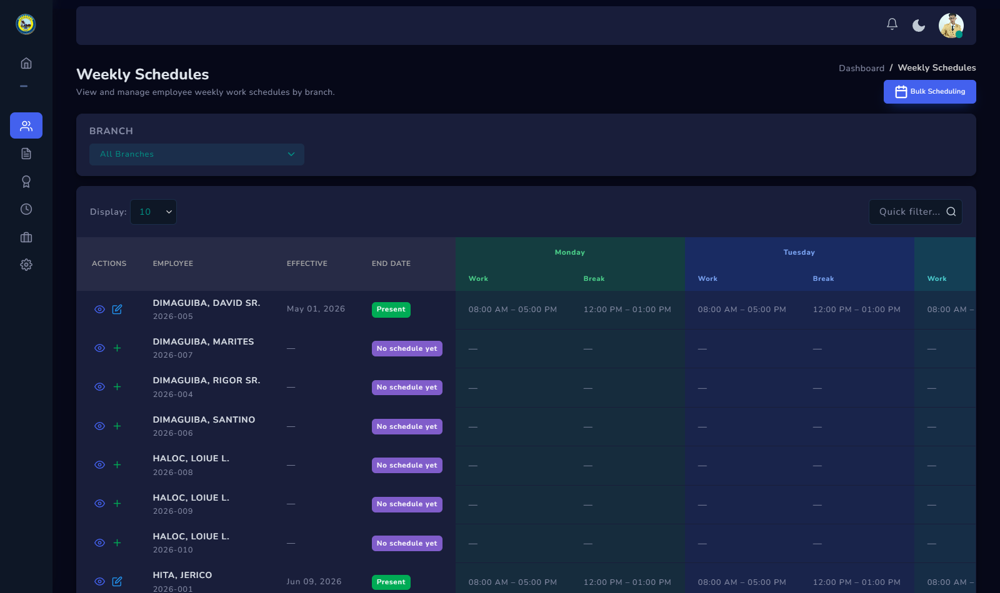
Nobody falls through the cracksEvery current employee is listed — even those with no schedule set yet.
Dated, conflict-checked historyOne active schedule at a time, with automatic overlap checking on every save.
Bulk SchedulingApply one weekly pattern — work hours, breaks, days off — to many employees at once.
Module 02 · Movement History
Promotions, raises, and status changes — fully dated
Every change is effective-dated, never overwrites history, and can't leave an employee with two open records at once.
Position MovementPromotions, transfers, and reassignments, each with its own date range.
HR Assistant Manager → HR Manager
Salary Grade MovementGrade and step changes, with daily and hourly rates computed automatically.
SG 1, Step 2 → SG 2, Step 1
Employment Status MovementProbationary → Permanent and beyond — and what drives the Dashboard's roster count.
Probationary → Permanent
Keep This Current
Four records Savest-Payroll reads directly
Savest-Payroll computes every pay run straight from these four HR records. Keep them current, and payroll stays accurate — let one go stale, and it shows up in someone's paycheck.
List of EmployeesBranch and position decide which payroll sheet, and which salary grade, an employee is picked up under.
Salary Grade MovementThe active grade and step is where Payroll pulls the monthly, daily, and hourly rate it computes pay from.
Employment Status MovementOnly employees on a status marked “Current Employee” get a payroll row generated at all.
Employee Weekly ScheduleWork hours, rest days, and breaks are exactly what attendance and overtime get measured against.
Module 03 & 04
Memos and performance, on the record
Memos, to one or manyIssue a memo to any number of employees, each file linked straight to Google Drive.
Evaluations, per employeePeriod, type, date, overall score and rating — with remarks and supporting files.
Filter every which wayBy date range, employee, subject or type, and — for evaluations — overall rating.
performance-evaluations
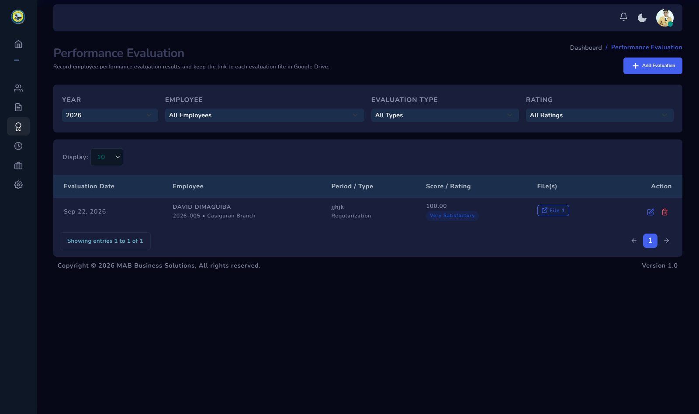
employee-memos
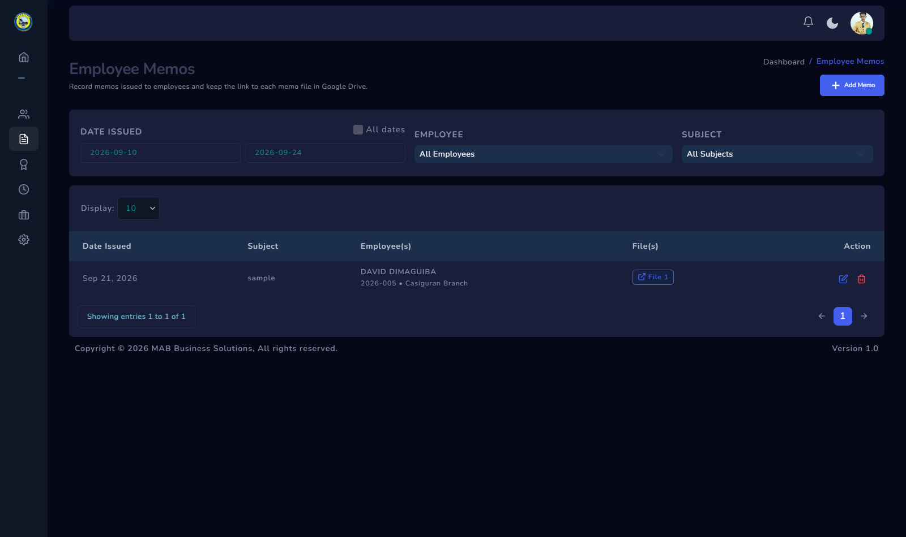
Module 05 · Attendance Management
Holidays, travel, visits, and suspensions — in one place
travel-requests
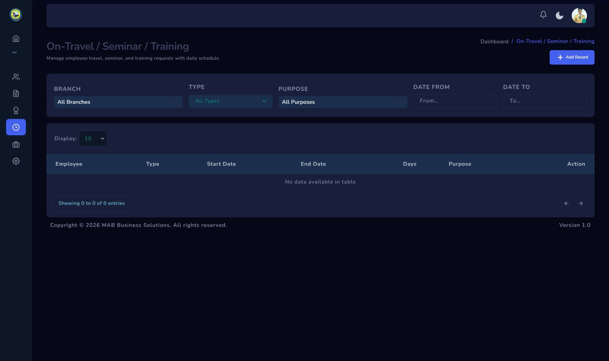
holidays
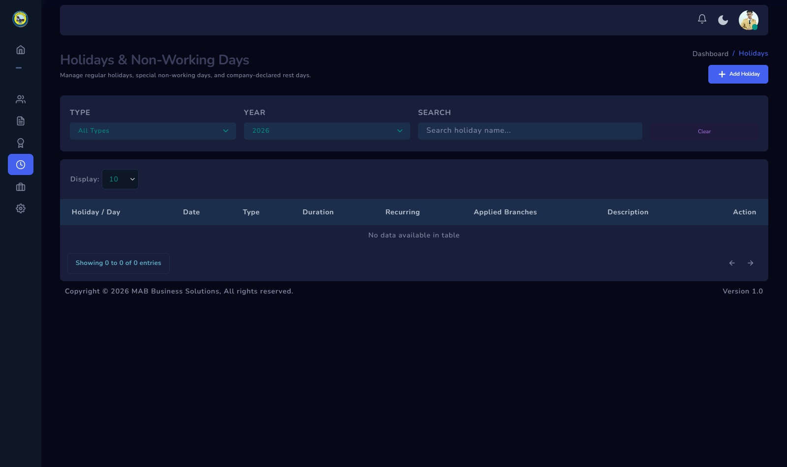
Company-wide or branch-onlyHolidays apply to every branch, or scope them to specific ones — with annual recurrence.
Travel, seminar & trainingRequests carry a day-by-day schedule, down to each day's start and end time.
Branch visits & suspensionsFull date ranges, auto-computed day counts, and a reason on every record.
Module 06 · Company Setup
One master list everything else draws from
Four reference lists, defined onceBranches, company positions, employment statuses, and salary grades — reused everywhere.
Rates, calculated for youDaily rate (÷ 26) and hourly rate (÷ 8) derive automatically from basic salary.
Archive, don't deleteRetire a position or hide a branch without losing the history tied to it.
salary-grades
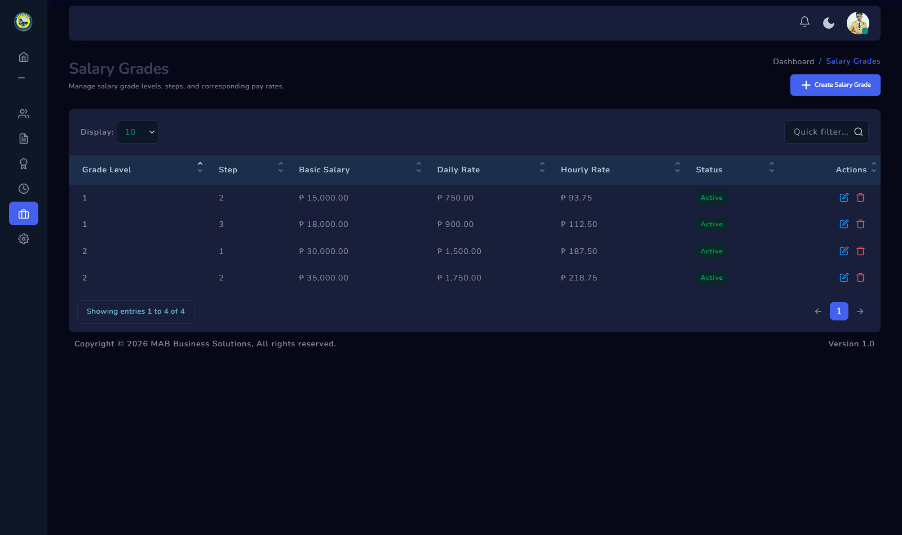
Module 07 · System Settings
Access, scoped down to the checkbox
system/user_permissions
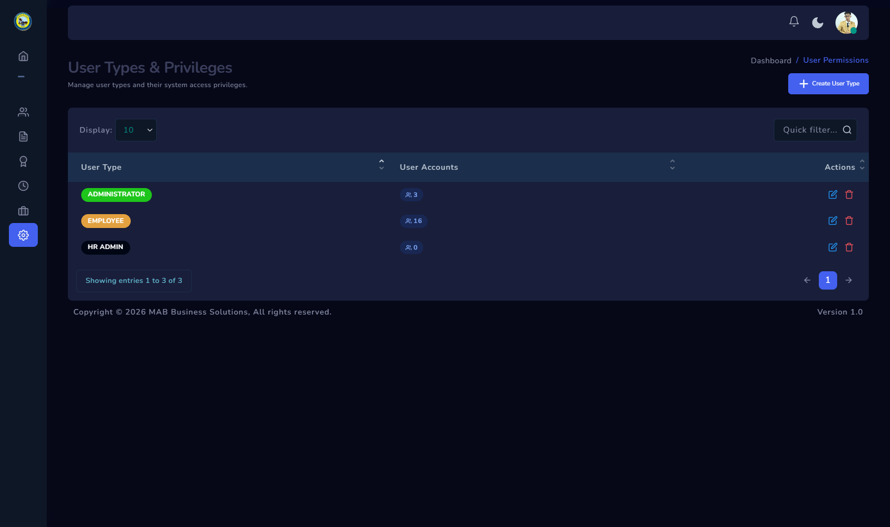
13 permission groupsEvery module — Employees, Memos, Evaluations, Schedules, and more — gated independently.
Branch-scoped by roleAssign branches per User Type — users only ever see their own branch's data.
Unlimited, color-tagged rolesCreate as many User Types as the organization needs — each with its own badge color.
Module 07 · System Logs
Every action, who did it, and when
Logged automaticallyLogins, logouts, and every record change — no action is ever silent.
Filter instantlyBy date, by user, or by activity type — including an "all dates" view for full history.
Drill into any entryA field-by-field snapshot of exactly what data was submitted — not just a one-line note.
system/system_logs
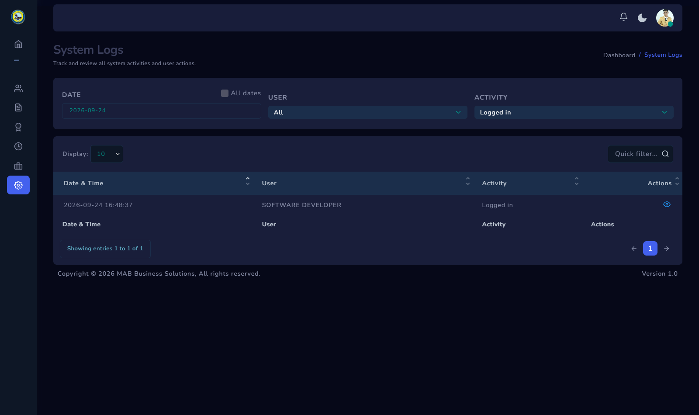
SAVEST-HRHuman Resource Information System
Let's Talk
Thank you. Questions?
Let's walk through your own workflow together — and see exactly where SAVEST-HRIS fits.